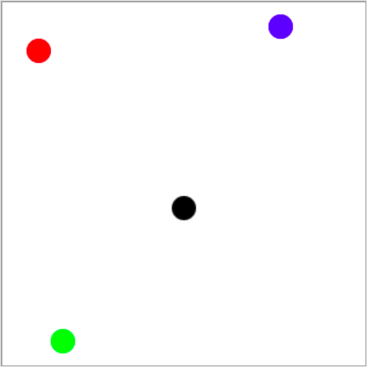

Writing a PyGame program¶
Basic structure of a PyGame program¶
In order for the programs we write to use the PyGame library (module), the first thing we need to do is import the PyGame module at the beginning of the program. This allows us to use all the functions and constants defined in the PyGame module.
After importing the module but before calling other functions, every program that uses the PyGame library needs to make a few steps to initialize the library, specify the dimensions of the window in which the program will draw, and set the title of that window. Also, there are a few steps at the end of the program that will tell the program to wait until the user clicks on the window close button, and after that to close the window and unlink the PyGame library.
These steps at the beginning and end of the work are the same or very similar in each program. To make it easier for beginners to use the PyGame library, we will also use a small additional library named PyGameBg. Thanks to this library, instead of listing all the necessary steps, it is enough to import the pygamebg module into our program (as well as pygame), and then call only one function from the pygamebg module at the beginning and one at the end of the program. This makes the programs shorter and simpler, allowing us to focus on the part of the program that is specific to the task at hand.
You can also run programs using the PyGameBg library in your local development environment (eg IDLE). All you have to do is install the PyGameBg library the same way you installed the PyGame library, i.e. by typing pip3 install pygamebg in the command prompt. When you install this library, you can copy the selected program to your editor and save it to your computer. You can then modify the program at will, save different versions of the program, and try them out by running the program.
Here’s what a PyGame program that draws one slanted line segment and waits for the user to close the window looks like.
Let’s go through the statements of this program in order to explain in more detail what they do.
First we have a group of statements that will need to appear at the beginning of each program:
using the
import pygame as pgstatement, we link our program with the pygame module. Here we use a slightly different form of the import statement from the one we used before. Also, we give the pygame module an abbreviated name, pg, and from that point we use that abbreviated name in the program as the name of the module. We could have also put justimport pygamewith no change in functionality, but then we would have to write pygame.Color, pygame.draw.line, etc. instead of pg.Color, pg.draw.line and the like.using the
import pygamebgstatement we import module pygamebg into our program. This statement can be combined with the previous one to get a single statement:import pygame as pg, pygamebg, and we will often do this.The
canvas = pygamebg.open_window(400, 400, "Pygame")statement calls theopen_windowfunction from thepygamebgmodule, which we imported into the program. This function performs all the necessary preparatory actions that we mentioned earlier. The function parameters are the width, height and title of the window opened by calling this function. The variable canvas returned by this function is later used in the program to draw in that window.
The following is a group of statements that is different in each program and determines what that particular program actually does. Our first program draws a black line on a white background, and it was achieved through this part of the program:
statement
canvas.fill(pg.Color("white"))paints the window white. Drawing often starts with this statement (we can use another color)statement
pg.draw.line(canvas, pg.Color("black"), (100, 100), (300, 300), 5)draws the line segment.
Statements like this will soon be explained in detail, but if you feel impatient, you can try modifying the parameter values in the program or adding new, similar statements and discover for yourself how these drawing functions work.
At the end of the program, we call another function from the pygamebg module: pygamebg.wait_loop(). This function contains statements that allow the drawing to appear in the window and keep the window open until the user clicks on the close button. After closing the window, the function deactivates all used parts of the PyGame library (turns them off).
All our PyGame programs will end with a call of the pygamebg.wait_loop() function or some function similar to it. After executing this function, the program can continue to run without the PyGame library in a text window if required.
Coordinate system¶
Coordinates are a very important term for us and we will encounter them in just about every PyGame program. The position of all objects (points, line segments, circles, text, imported images, etc.) in the window is determined by their coordinates in the coordinate system of the window.
The coordinate system of a window is similar, but still slightly different from the one used in mathematics. The position of a point is determined by an ordered pair of its coordinates in this case as well (coordinate x, i.e. abscissa and coordinate y, i.e. ordinate). The unit of measurement is one pixel.
In computer graphics, origin of a coordinate system is in the upper left corner of a window. Coordinate \(x\) increases when we move to the right (as in mathematics), but coordinate \(y\) decreases when we move up, that is, it increases when we move down, which is different from the usual coordinate system in mathematics. Let a given point be \(A(5, 3)\). If we moved this point 1 pixel upwards and kept its \(x\) coordinate, then the new coordinates of point \(A\) would be \(A(5, 2)\). If we moved point \(A\) 2 pixels down from the current position, the new coordinates would be \(A(5, 4)\). So, the first coordinate of the point determines how far the point is from the left edge of the window, and the second coordinate how far the point is from the top edge of the window.

In the Python programming language, a pair of point coordinates can be represented by either a two-element tuple (3, 5), or a two-element list [3, 5]. In the previous example, two endpoints of the line segment were given by two two-element tuples ((100, 100) and (300, 300)).
Often, you need to specify a rectangle whose sides are parallel to the coordinate axes. Such a rectangle is specified using a tuple or a list containing four numbers: (x, y, w, h) or [x, y, w, h]. The \(x\) and the \(y\) represent the coordinates of the top left corner of the rectangle, and the \(w\) and the \(h\) represent the width and the height of the rectangle in pixels. For example, the rectangle in the following image could be specified as pygame.Rect(2, 1, 4, 3), or simply as (2, 1, 4, 3) or [2, 1, 4, 3].

The following program can help you understand the coordinates. Launch the program by clicking on the “Play task” button, then move your mouse and watch as the coordinates change. The window the mouse is moving in is 300 times 300 pixels in size. The values of the x and y coordinates appear both in the window title bar and next to the mouse pointer. The notation that appears next to the pointer is in the form of an ordered pair, as it will be in the programs when we specify a single point.
Test your knowledge of coordinates through the following few questions.
{kind=link}
-
Link the color of the circle to the coordinates of its center (the window dimensions are 300 times 300 pixels).
Try again!
- red
- (30, 40)
- green
- (50, 280)
- blue
- (230, 20)
- black
- (150, 170)
If the window is 200 pixels wide and 300 pixels high, what are the coordinates of its center point (write the result as an ordered pair)?
- The x coordinate grows from left to right.
- Correct.
- The y coordinate decreases from top to bottom of the screen.
- The y coordinate increases from top to bottom of the screen.
- Points on the top edge of the screen have a y coordinate equal to 0.
- Correct.
- Points on the right edge of the screen have an x coordinate equal to 0.
- Points on the right edge of the screen have the largest x coordinate.
- The point at the bottom right corner of the screen has the largest both coordinates.
- Correct.
Q-22: Mark the correct statements.
-
If the width of a window is `w` and the height is`h`, pair the corners of the screen with their coordinates.
Try again!
- top-left
- (0, 0)
- top-right
- (w, 0)
- bottom-left
- (0, h)
- bottom-right
- (w, h)
Specifying colors¶
Of course, when drawing, different colors can be used. We can specify a color by its name (in English), which we forward as a parameter to the pg.Color function. You can use colors by forwarding the appropriate string: 'black' for black, 'white' for white, 'gray' for gray, 'blue' for blue, 'green' for green, 'orange' for orange, 'yellow' for yellow, etc. Recall that stings are specified either between single or double quotes (e.g. ‘blue’ and “blue” can be used interchangeably). For example, if you call function py.draw.line(canvas, pg.Color('blue'), (0, 0), (200, 200), 3) a blue line segment, 3 pixels wide, whose end points’ coordinates are \((0, 0)\) and \((200, 200)\) will appear in the window
Some of the color names commonly used in programs are:
|
Black |
|
White |
|
Red |
|
Green |
|
Blue |
|
Cyan |
|
Magenta |
|
Yellow |
|
Orange |
Play around with the colors in the following program and try to paint the window in some or all of these colors.
One of the mistakes that is often made when writing the first PyGame programs is to write pg.color in lowercase when specifying a color, instead of capitalizing - pg.Color. This causes an error with the message AttributeError: '' object has no attribute 'color'.
Another common mistake is not to specify the color name under quotation marks (for example, to specify pg.Color (white)). Then the error shows NameError: name 'white' is not defined on line 8 message.
In addition to these colors, there are many others you can use. The total number of colors that exist in computers is huge, amounting to about 16 million. Out of these, we can only name a little over 600 different colors (the complete list is in the colordict.py file, which you can easily find on the Internet, and if you have PyGame installed, you have it on your computer as well).
We can specify all these named colors, as well as all the others that have no names, using numbers. The so-called RGB color model is the most used for this. Namely, in computer graphics, each color is obtained by mixing a certain amount of red, green and blue, by whose names the RGB model is named. For example, combining red and green lights produces a yellow light, combining red and blue produces magenta, and combining blue and green produces cyan. Combining light of all three primary colors results in white light, while black light is obtained when all three lights are off. Gray light is obtained by mixing equal amounts of red, green and blue light.

This means we can describe a color by specifying three numbers (in this case, numbers from 0 to 255), which represent the amount of red, green and blue colored light, respectively, in the color we are defining. In the Python programming language, color can also be represented in the form of a three-element ordered tuple (e.g. (123, 80, 56)), or a three-element list (e.g. [123, 80, 56]). You can specify the tuple or list directly as the color argument of a function, or you can store it in a variable and use the variable name later. For example, by assigning CYAN = (0, 255, 255), we define the cyan color by specifying the appropriate amounts of red, green and blue light contained in this color (since it is a mixture of blue and green there is no red at all, and blue and green components are at maximum). After that, we can use this color in a function call as well (for example, canvas.fill(CYAN)). The names of these variables do not have to be capitalized, but this has become common practice in writing Python programs. In the programs you will see below, you will encounter definitions like this.
A color can also be specified with four numbers, for example CYAN = (0, 255, 255, 10). The last, fourth parameter (also in range from 0 to 255) determines the color’s transparency, i.e. the cyan color given in this way is slightly transparent.
Let’s now summarize the RGB values of some common colors.
|
red |
|
green |
|
blue |
|
yellow |
|
cyan |
|
magenta |
|
white |
|
black |
|
gray |
|
orange |
|
pink |
Notice that the shades of gray are recognizable in that the amounts of red, green and blue are equal in them. The smaller the amount, the darker the shade, and vice versa - greater equal amounts of red, green and blue represent lighter shades of gray (based on the RGB value, black and white can be seen as the darkest and the lightest shade of gray).
In the following program, you can also try specifying colors in the RGB format. In addition to coloring the window in some or all of the colors listed, you can enter (any) other triples of values between 0 and 255.
When choosing the colors you want to use in your programs, a color picker tool may help you. There is a tool like that on many sites (search for color picker), or you could use the one from the Paint application. You can try it now - choose a color and copy the R, G, B values to the program.
Establish your knowledge of colors by answering the following few questions.
-
Match the colors.
Try again!
- Black
- (0, 0, 0)
- Blue
- (0, 0, 255)
- Red
- (255, 0, 0)
- Green
- (0, 255, 0)
- (1, 12, 123)
- Try again
- (128, 0, 128)
- Try again
- (0, 0, 128)
- Try again
- (145, 145, 145)
- Correct
Q-23: Which of the following colors is a shade of gray?
- red and green
- Try again
- blue and red
- Correct
- green and blue
- Try again
- red, green and blue
- Try again
Q-24: What colors are mixed to produce a purple (magenta) color?
- Bluish
- Try again
- Reddish
- Try again
- Yellowish
- Correct
- Greenish
- Try again
Q-25: What should the color [240, 230, 18] best be called?
So, the colors are represented by three and the coordinates of the points by two numbers. Check if you understand this by answering the following question.
-
pair the colors and the coordinates if the screen is 300 pixels wide and 200 pixels high.
Try again!
- Black color
- [0, 0, 0]
- Top left corner of the screen
- [0, 0]
- Magenta color
- (255, 0, 255)
- Bottom right corner of the screen
- (300, 200)